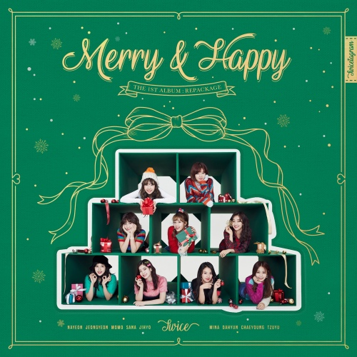

나의 취미는 바로!
영화보기야
제일 좋아하는 영화는
어벤져스 - 엔드게임
특히 마지막 전투 장면을 가장 좋아해! 모든 히어로들이 등장하는 장면은 아직도 잊을 수 없어 .. 개인적으로 마블 영화 명장면 top 3에 든다고 생각해!
그리고 나는 노래듣는 것도 좋아해!
그 중에서 요즘 빠진 노래 2곡을 추천할게 꼭 들어봐 >_<
"하현상 - 겨울이 오면"
얼마전에 나온 노랜데 겨울에 듣기 너무 좋아서 추천할게! 친구 만나러 갈 때 버스나 지하철에서
들으면 너무 좋더라 ^_^

"트와이스 - merry & happy"
평소 k팝을 많이 듣는데 겨울이라 특히 캐롤을 더 자주 듣게 되는 거 같아 ㅎㅎ 이 노래를 들으면
추운 겨울이 조금은 따뜻하게 느껴지는 것 같더라고! 추천할게 ~~